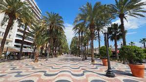
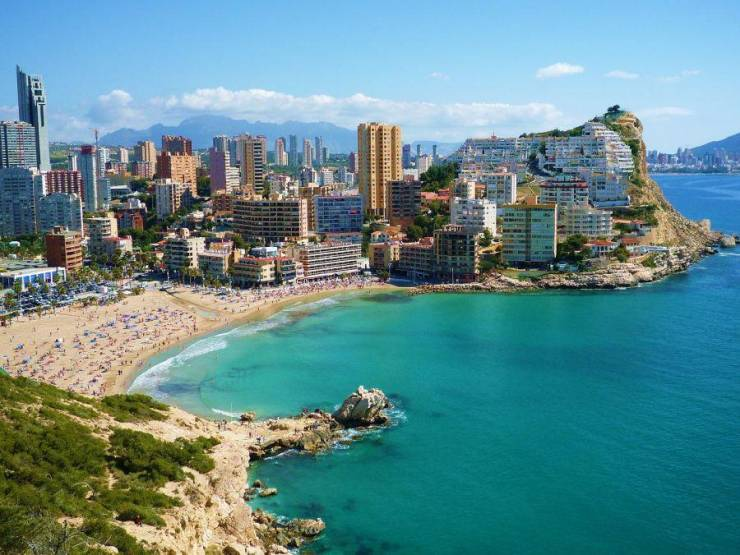
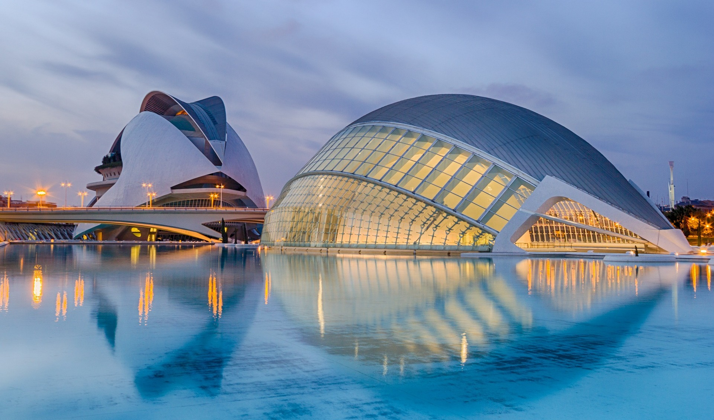
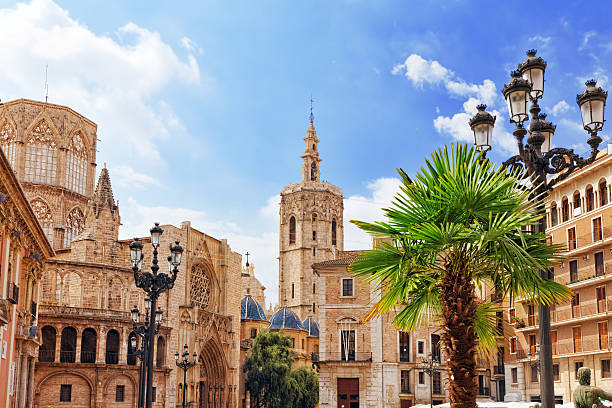
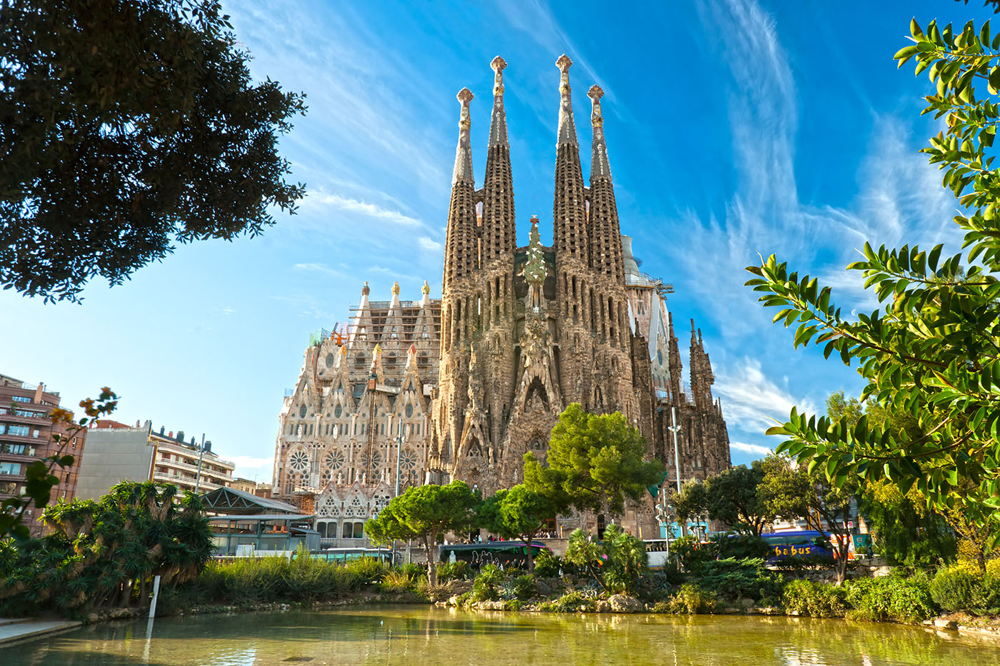
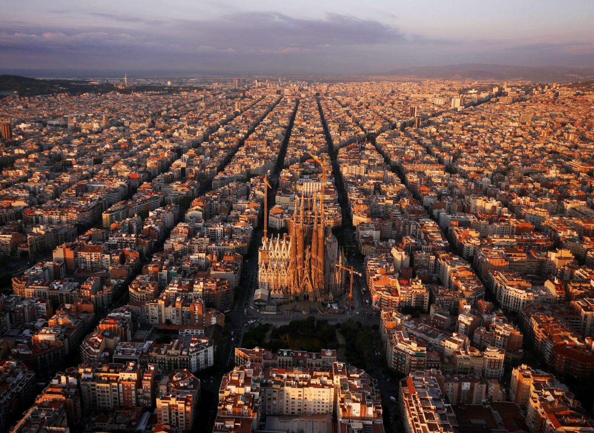
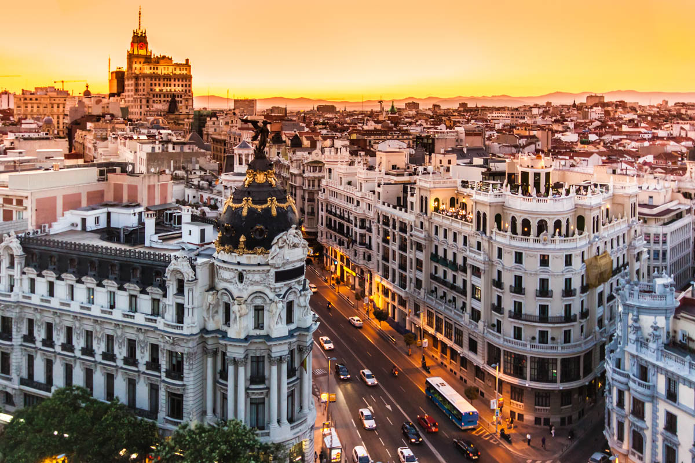
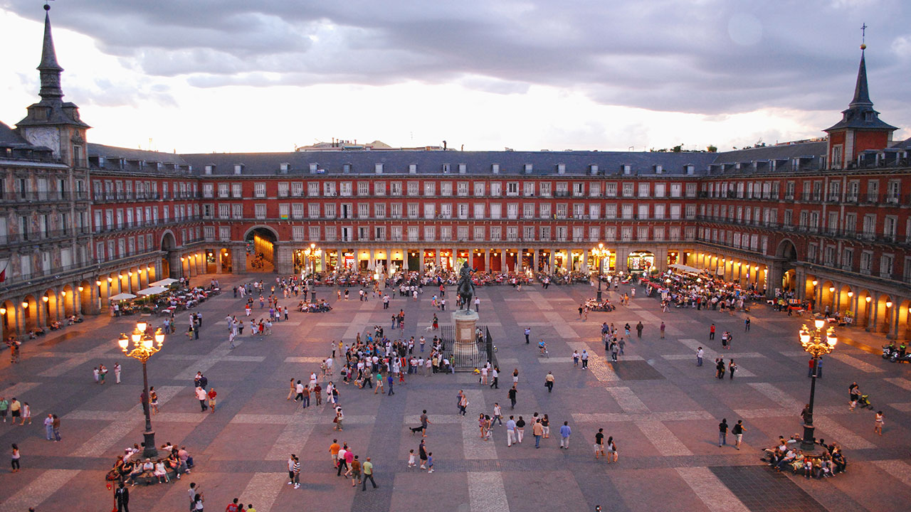
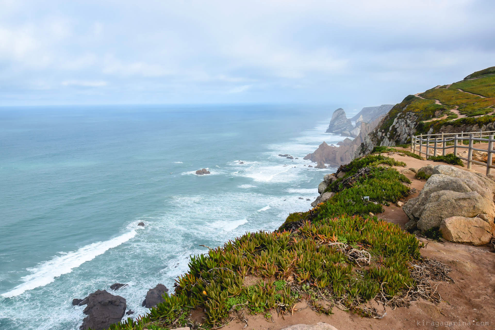
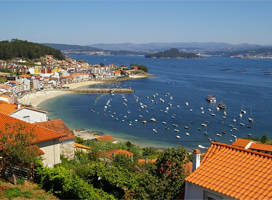

|  |
Аликанте |
Город в Испании в составе автономного сообщества Валенсия, центр одноимённой провинции.
Город расположен на побережье Средиземного моря. По количеству населения (330 тыс. человек)
Аликанте является вторым в Валенсийском сообществе и 11-м по всей стране.
|
|  |
|  |
Валенсия |
Город в Испании, центр автономного сообщества Валенсия и одноимённой провинции.
Третий по количеству жителей город Испании после Мадрида и Барселоны. Расположен у впадения
частично осушенной реки Турия в Средиземном море.
|
|  |
|  |
Барселона |
Город в Испании, столица автономной области Каталония
и провинции Барселона. Порт на Средиземном море в 120 км от границы
Франции и в 504 км восточнее Мадрида. Крупнейший промышленный и торговый
центр Испании. Один из важнейших туристических пунктов в европейских маршрутах.
|
|  |
|  |
Мадрид |
Столица и крупнейший город Испании, а также административный центр
одноимённых провинции и автономного сообщества. Муниципалитет находится в составе
района (комарки) Ареа-Метрополитана. Крупнейший экономический, политический и культурный
центр страны.
|
|  |
|  |
Сантьяго-де-Компостела |
Столица автономного сообщества Галисия в Испании. Муниципалитет находится в
составе района (комарки) Сантьяго. Город возник вокруг Сантьягского собора — крупнейшего
центра паломничества. В 1985 году старая часть города вошла в список Всемирного наследия
ЮНЕСКО. Культурная столица Европы 2000 года.
|
|  |